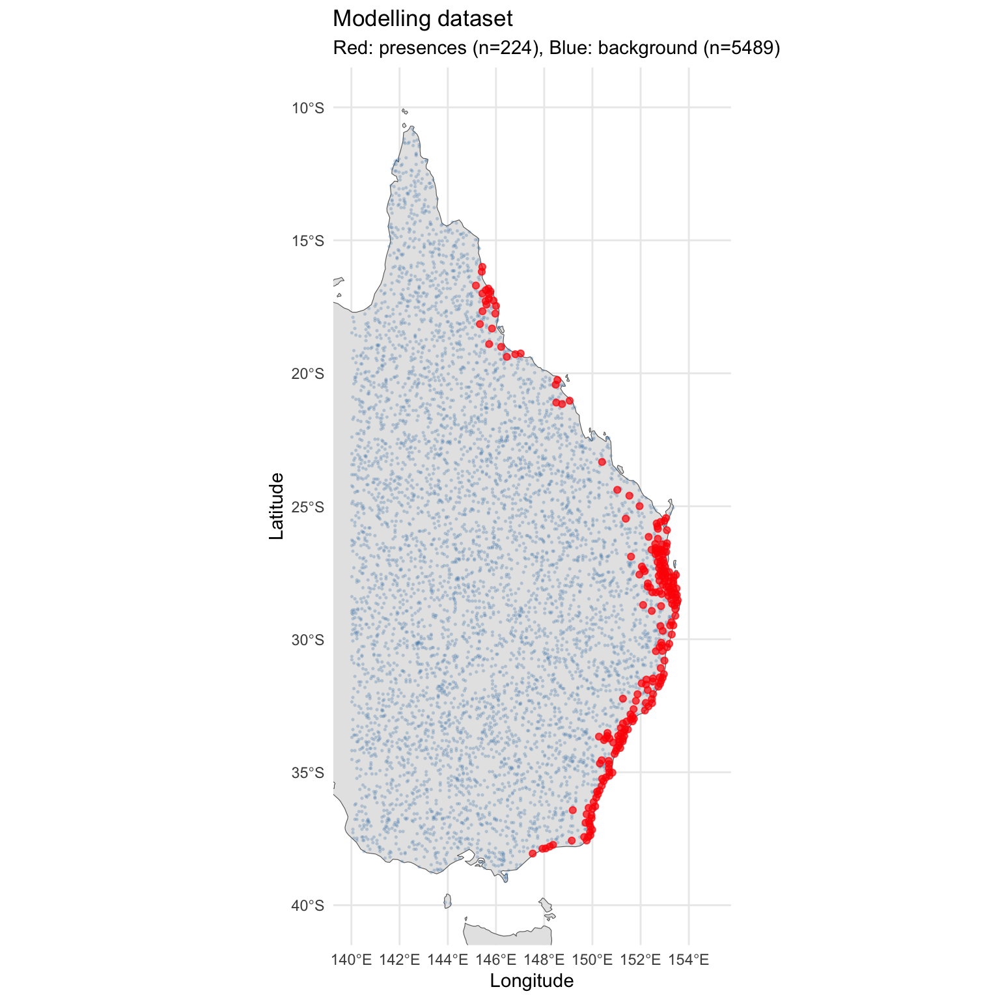
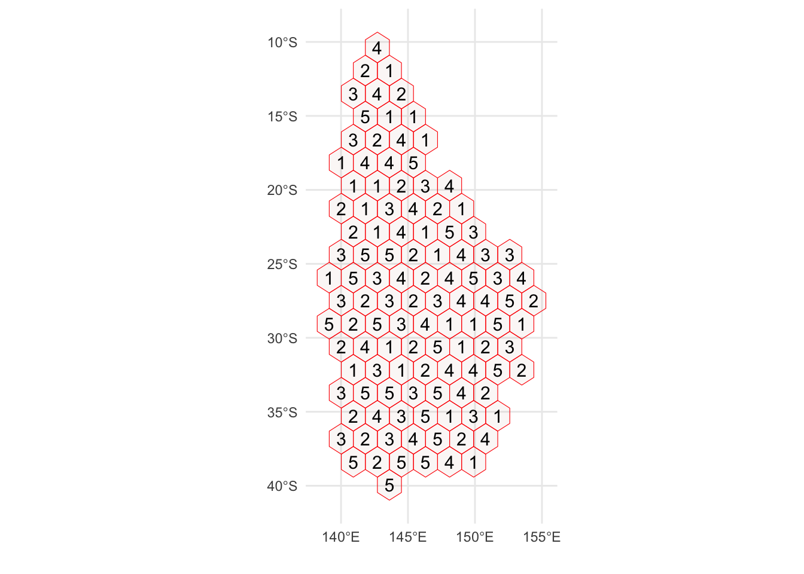

# --- Core spatial ---
library(terra)
library(sf)
library(rnaturalearth)
library(rnaturalearthdata)
# --- Data manipulation ---
library(tidyverse)
# --- SDM fitting ---
library(maxnet)
library(randomForest)
library(gbm)
library(dismo)
library(mgcv)
# --- SDM evaluation and tuning ---
library(blockCV)
library(ENMeval)
library(ecospat)
# --- Variable selection ---
library(corrplot)
# --- Spatial thinning ---
library(spThin)
# --- Visualisation ---
library(patchwork)
library(viridis)
# --- Set seed for reproducibility ---
set.seed(7990)
# --- Paths ---
base_dir <- "/Users/gof005/Library/CloudStorage/OneDrive-CSIRO/OneDrive - Docs/01_Projects/alpha_gal/02_SAP_2025-6/Ihol_SDM"
data_dir <- file.path(base_dir, "data")
processed_dir <- file.path(base_dir, "processed_data")
output_dir <- file.path(base_dir, "outputs")
figures_dir <- file.path(base_dir, "figures")
# --- Study area extent (Eastern Australia) ---
study_extent <- ext(140, 155, -40, -10)03 Background Point Generation
1. Setup and Configuration
2. Load Outputs from Previous Scripts
# --- From 02_env_vars.qmd ---
env_model <- rast(file.path(output_dir, "env_layers", "env_model.tif"))
final_vars <- readRDS(file.path(output_dir, "env_layers", "final_vars.rds"))
# --- From 01_occurrences.qmd ---
occ_thinned <- read.csv(file.path(processed_dir, "thinned_occurrences", "thinned_data_thin1.csv"))
cat("env_model layers (", nlyr(env_model), "):", paste(final_vars, collapse = ", "), "\n")
cat("Occurrence points loaded:", nrow(occ_thinned), "\n")env_model layers ( 6 ): bio5, bio6, bio12, aridity_idx, cmi_idx, vpd_annual
Occurrence points loaded: 227 5. Background Point Generation
We generate background points (pseudo-absences) for model fitting. These represent the available environmental conditions within the study area.
# Generate random background points within the study area, on land
n_bg <- 10000
# Use the first environmental layer as a template (non-NA = land)
land_mask <- !is.na(env_model[[1]])
# Sample random cells from land
bg_cells <- spatSample(land_mask, size = n_bg, method = "random",
cells = TRUE, na.rm = TRUE)
bg_coords <- xyFromCell(env_model, bg_cells$cell)
bg_df <- as.data.frame(bg_coords)
names(bg_df) <- c("lon", "lat")
# Remove background points within 5 km of any occurrence point
occ_sf_pts <- st_as_sf(occ_thinned, coords = c("lon", "lat"), crs = 4326)
bg_sf_pts <- st_as_sf(bg_df, coords = c("lon", "lat"), crs = 4326)
# Calculate minimum distance from each background point to nearest occurrence
# Using a 5 km buffer (~0.045 degrees)
min_dist <- st_distance(bg_sf_pts, occ_sf_pts)
min_dist_km <- apply(min_dist, 1, min) / 1000 # Convert metres to km
bg_df <- bg_df[min_dist_km > 5, ]
cat("Background points after 5 km buffer:", nrow(bg_df), "\n")
# Trim to target number if we have too many
if (nrow(bg_df) > n_bg) {
bg_df <- bg_df[sample(nrow(bg_df), n_bg), ]
}
cat("Final background points:", nrow(bg_df), "\n")Background points after 5 km buffer: 9967
Final background points: 9967 5.1 Extract Environmental Values and Build Modelling Dataset
# Extract environmental values at occurrence points
occ_vect <- vect(occ_thinned, geom = c("lon", "lat"), crs = "EPSG:4326")
occ_env_vals <- terra::extract(env_model, occ_vect)
occ_env_vals <- data.frame(
presence = 1,
lon = occ_thinned$lon,
lat = occ_thinned$lat,
occ_env_vals[, -1] # Remove ID column
)
# Extract at background points
bg_vect <- vect(bg_df, geom = c("lon", "lat"), crs = "EPSG:4326")
bg_env_vals <- terra::extract(env_model, bg_vect)
bg_env_vals <- data.frame(
presence = 0,
lon = bg_df$lon,
lat = bg_df$lat,
bg_env_vals[, -1]
)
# Combine into single modelling dataset
model_data <- rbind(occ_env_vals, bg_env_vals)
model_data <- model_data[complete.cases(model_data), ]
cat("Modelling dataset: ", sum(model_data$presence == 1), "presences +",
sum(model_data$presence == 0), "background =",
nrow(model_data), "total\n")Modelling dataset: 224 presences + 5489 background = 5713 total5.2 Map Presence and Background Points
p_points <- ggplot() +
geom_sf(data = ne_countries(country = "Australia", scale = "medium", returnclass = "sf"),
fill = "grey90", colour = "grey40") +
geom_point(data = model_data %>% filter(presence == 0),
aes(x = lon, y = lat),
colour = "steelblue", size = 0.3, alpha = 0.2) +
geom_point(data = model_data %>% filter(presence == 1),
aes(x = lon, y = lat),
colour = "red", size = 1.5, alpha = 0.7) +
coord_sf(xlim = c(140, 155), ylim = c(-40, -10)) +
labs(
title = "Modelling dataset",
subtitle = paste0("Red: presences (n=", sum(model_data$presence == 1),
"), Blue: background (n=", sum(model_data$presence == 0), ")"),
x = "Longitude", y = "Latitude"
) +
theme_minimal()
print(p_points)
6. Spatial Cross-Validation Setup
We use spatially-blocked cross-validation to avoid inflated accuracy metrics caused by spatial autocorrelation.
# Convert modelling data to sf
model_sf <- st_as_sf(model_data, coords = c("lon", "lat"), crs = 4326)
# Create spatial blocks for cross-validation
# Block size should approximate the spatial autocorrelation range
# For tick distributions at this scale, ~200 km is reasonable
sb <- cv_spatial(
x = model_sf,
column = "presence",
k = 5,
size = 200000, # 200 km in metres
selection = "random",
iteration = 100,
progress = FALSE
)
cat("Spatial CV folds created:\n")
for (i in 1:5) {
n_train_pres <- sum(model_data$presence[sb$folds_list[[i]][[1]]] == 1)
n_train_bg <- sum(model_data$presence[sb$folds_list[[i]][[1]]] == 0)
n_test_pres <- sum(model_data$presence[sb$folds_list[[i]][[2]]] == 1)
n_test_bg <- sum(model_data$presence[sb$folds_list[[i]][[2]]] == 0)
cat(sprintf(" Fold %d: Train %d pres + %d bg | Test %d pres + %d bg\n",
i, n_train_pres, n_train_bg, n_test_pres, n_test_bg))
}
train_0 train_1 test_0 test_1
1 4430 187 1059 37
2 4395 187 1094 37
3 4456 185 1033 39
4 4301 195 1188 29
5 4374 142 1115 82
Spatial CV folds created:
Fold 1: Train 187 pres + 4430 bg | Test 37 pres + 1059 bg
Fold 2: Train 187 pres + 4395 bg | Test 37 pres + 1094 bg
Fold 3: Train 185 pres + 4456 bg | Test 39 pres + 1033 bg
Fold 4: Train 195 pres + 4301 bg | Test 29 pres + 1188 bg
Fold 5: Train 142 pres + 4374 bg | Test 82 pres + 1115 bg7. Model Fitting and Evaluation
7.1 Helper Functions
# Function to calculate AUC
calc_auc <- function(obs, pred) {
# obs: 0/1 vector, pred: predicted probabilities
n1 <- sum(obs == 1)
n0 <- sum(obs == 0)
if (n1 == 0 | n0 == 0) return(NA)
ranks <- rank(pred)
auc <- (sum(ranks[obs == 1]) - n1 * (n1 + 1) / 2) / (n1 * n0)
return(auc)
}
# Function to calculate TSS (at threshold maximising TSS)
calc_tss <- function(obs, pred, n_thresholds = 100) {
thresholds <- seq(min(pred), max(pred), length.out = n_thresholds)
tss_vals <- sapply(thresholds, function(t) {
pred_bin <- ifelse(pred >= t, 1, 0)
tp <- sum(pred_bin == 1 & obs == 1)
fn <- sum(pred_bin == 0 & obs == 1)
fp <- sum(pred_bin == 1 & obs == 0)
tn <- sum(pred_bin == 0 & obs == 0)
sensitivity <- tp / (tp + fn)
specificity <- tn / (tn + fp)
tss <- sensitivity + specificity - 1
return(tss)
})
best_idx <- which.max(tss_vals)
return(list(tss = tss_vals[best_idx], threshold = thresholds[best_idx]))
}
# Function to calculate Boyce Index
calc_boyce <- function(obs, pred) {
tryCatch({
bi <- ecospat.boyce(fit = pred, obs = pred[obs == 1],
nclass = 0, window.w = "default", res = 100,
PEplot = FALSE)
return(bi$cor)
}, error = function(e) return(NA))
}7.2 Cross-Validated Model Fitting
# Prepare storage for CV results
cv_results <- list()
# Predictor columns
pred_cols <- final_vars
for (fold_i in 1:5) {
cat("\n=== Fold", fold_i, "===\n")
train_idx <- sb$folds_list[[fold_i]][[1]]
test_idx <- sb$folds_list[[fold_i]][[2]]
train_data <- model_data[train_idx, ]
test_data <- model_data[test_idx, ]
train_x <- as.data.frame(train_data[, pred_cols])
test_x <- as.data.frame(test_data[, pred_cols])
train_y <- train_data$presence
test_y <- test_data$presence
fold_results <- list()
# --- 1. MaxEnt ---
tryCatch({
me_model <- maxnet(p = train_y, data = train_x,
maxnet.formula(p = train_y, data = train_x,
classes = "lqh"))
me_pred <- predict(me_model, test_x, type = "cloglog")
fold_results$maxent <- list(
auc = calc_auc(test_y, me_pred),
tss = calc_tss(test_y, me_pred)$tss,
boyce = calc_boyce(test_y, me_pred)
)
cat(" MaxEnt AUC:", round(fold_results$maxent$auc, 3), "\n")
}, error = function(e) {
cat(" MaxEnt failed:", e$message, "\n")
fold_results$maxent <<- list(auc = NA, tss = NA, boyce = NA)
})
# --- 2. Random Forest ---
tryCatch({
rf_data <- cbind(presence = factor(train_y), train_x)
rf_model <- randomForest(presence ~ ., data = rf_data,
ntree = 1000,
mtry = floor(sqrt(length(pred_cols))))
rf_pred <- predict(rf_model, test_x, type = "prob")[, "1"]
fold_results$rf <- list(
auc = calc_auc(test_y, rf_pred),
tss = calc_tss(test_y, rf_pred)$tss,
boyce = calc_boyce(test_y, rf_pred)
)
cat(" Random Forest AUC:", round(fold_results$rf$auc, 3), "\n")
}, error = function(e) {
cat(" RF failed:", e$message, "\n")
fold_results$rf <<- list(auc = NA, tss = NA, boyce = NA)
})
# --- 3. BRT (Boosted Regression Trees) ---
tryCatch({
brt_data <- cbind(presence = train_y, train_x)
brt_model <- gbm.step(
data = brt_data,
gbm.x = which(names(brt_data) %in% pred_cols),
gbm.y = 1,
family = "bernoulli",
tree.complexity = 3,
learning.rate = 0.005,
bag.fraction = 0.75,
silent = TRUE,
plot.main = FALSE
)
if (!is.null(brt_model)) {
brt_pred <- predict(brt_model, test_x,
n.trees = brt_model$gbm.call$best.trees,
type = "response")
fold_results$brt <- list(
auc = calc_auc(test_y, brt_pred),
tss = calc_tss(test_y, brt_pred)$tss,
boyce = calc_boyce(test_y, brt_pred)
)
cat(" BRT AUC:", round(fold_results$brt$auc, 3), "\n")
} else {
# Try with lower learning rate
brt_model <- gbm.step(
data = brt_data,
gbm.x = which(names(brt_data) %in% pred_cols),
gbm.y = 1,
family = "bernoulli",
tree.complexity = 2,
learning.rate = 0.001,
bag.fraction = 0.75,
silent = TRUE,
plot.main = FALSE
)
if (!is.null(brt_model)) {
brt_pred <- predict(brt_model, test_x,
n.trees = brt_model$gbm.call$best.trees,
type = "response")
fold_results$brt <- list(
auc = calc_auc(test_y, brt_pred),
tss = calc_tss(test_y, brt_pred)$tss,
boyce = calc_boyce(test_y, brt_pred)
)
cat(" BRT AUC:", round(fold_results$brt$auc, 3), "\n")
} else {
fold_results$brt <- list(auc = NA, tss = NA, boyce = NA)
cat(" BRT: could not fit model\n")
}
}
}, error = function(e) {
cat(" BRT failed:", e$message, "\n")
fold_results$brt <<- list(auc = NA, tss = NA, boyce = NA)
})
# --- 4. GAM ---
tryCatch({
gam_data <- cbind(presence = train_y, train_x)
# Build formula with smooth terms
smooth_terms <- paste0("s(", pred_cols, ", k = 5)")
gam_formula <- as.formula(
paste("presence ~", paste(smooth_terms, collapse = " + "))
)
gam_model <- gam(gam_formula, data = gam_data,
family = binomial(link = "logit"),
method = "REML")
gam_pred <- predict(gam_model, test_x, type = "response")
fold_results$gam <- list(
auc = calc_auc(test_y, gam_pred),
tss = calc_tss(test_y, gam_pred)$tss,
boyce = calc_boyce(test_y, gam_pred)
)
cat(" GAM AUC:", round(fold_results$gam$auc, 3), "\n")
}, error = function(e) {
cat(" GAM failed:", e$message, "\n")
fold_results$gam <<- list(auc = NA, tss = NA, boyce = NA)
})
# --- 5. GLM ---
tryCatch({
glm_data <- cbind(presence = train_y, train_x)
# Linear + quadratic terms for temperature, linear for others
temp_vars <- pred_cols[grepl("bio5|bio6", pred_cols)]
other_vars <- setdiff(pred_cols, temp_vars)
glm_terms <- c(
other_vars,
paste0("poly(", temp_vars, ", 2)")
)
glm_formula <- as.formula(
paste("presence ~", paste(glm_terms, collapse = " + "))
)
glm_model <- glm(glm_formula, data = glm_data,
family = binomial(link = "logit"))
glm_pred <- predict(glm_model, test_x, type = "response")
fold_results$glm <- list(
auc = calc_auc(test_y, glm_pred),
tss = calc_tss(test_y, glm_pred)$tss,
boyce = calc_boyce(test_y, glm_pred)
)
cat(" GLM AUC:", round(fold_results$glm$auc, 3), "\n")
}, error = function(e) {
cat(" GLM failed:", e$message, "\n")
fold_results$glm <<- list(auc = NA, tss = NA, boyce = NA)
})
cv_results[[fold_i]] <- fold_results
}
=== Fold 1 ===
MaxEnt AUC: 0.975
Random Forest AUC: 0.975
BRT AUC: 0.973
GAM AUC: 0.973
GLM AUC: 0.975
=== Fold 2 ===
MaxEnt AUC: 0.973
Random Forest AUC: 0.973
BRT AUC: 0.978
GAM AUC: 0.969
GLM AUC: 0.969
=== Fold 3 ===
MaxEnt AUC: 0.951
Random Forest AUC: 0.948
BRT AUC: 0.945
GAM AUC: 0.955
GLM AUC: 0.951
=== Fold 4 ===
MaxEnt AUC: 0.985
Random Forest AUC: 0.973
BRT AUC: 0.962
GAM AUC: 0.985
GLM AUC: 0.984
=== Fold 5 ===
MaxEnt AUC: 0.954
Random Forest AUC: 0.951
BRT AUC: 0.952
GAM AUC: 0.956
GLM AUC: 0.95 7.3 Cross-Validation Summary
# Compile CV results into a data frame
algorithms <- c("maxent", "rf", "brt", "gam", "glm")
algo_names <- c("MaxEnt", "Random Forest", "BRT", "GAM", "GLM")
cv_summary <- data.frame(
Algorithm = algo_names,
AUC_mean = NA, AUC_sd = NA,
TSS_mean = NA, TSS_sd = NA,
Boyce_mean = NA, Boyce_sd = NA
)
for (i in seq_along(algorithms)) {
alg <- algorithms[i]
auc_vals <- sapply(cv_results, function(f) f[[alg]]$auc)
tss_vals <- sapply(cv_results, function(f) f[[alg]]$tss)
boyce_vals <- sapply(cv_results, function(f) f[[alg]]$boyce)
cv_summary$AUC_mean[i] <- round(mean(auc_vals, na.rm = TRUE), 3)
cv_summary$AUC_sd[i] <- round(sd(auc_vals, na.rm = TRUE), 3)
cv_summary$TSS_mean[i] <- round(mean(tss_vals, na.rm = TRUE), 3)
cv_summary$TSS_sd[i] <- round(sd(tss_vals, na.rm = TRUE), 3)
cv_summary$Boyce_mean[i] <- round(mean(boyce_vals, na.rm = TRUE), 3)
cv_summary$Boyce_sd[i] <- round(sd(boyce_vals, na.rm = TRUE), 3)
}
cat("\n========================================\n")
cat("SPATIAL CROSS-VALIDATION RESULTS (5-fold)\n")
cat("========================================\n\n")
print(cv_summary, row.names = FALSE)
# Save CV summary
write_csv(cv_summary, file.path(output_dir, "cv_performance_summary.csv"))
========================================
SPATIAL CROSS-VALIDATION RESULTS (5-fold)
========================================
Algorithm AUC_mean AUC_sd TSS_mean TSS_sd Boyce_mean Boyce_sd
MaxEnt 0.968 0.014 0.881 0.059 0.711 0.174
Random Forest 0.964 0.014 0.857 0.054 0.559 0.168
BRT 0.962 0.014 0.838 0.058 0.519 0.152
GAM 0.967 0.012 0.873 0.062 0.558 0.173
GLM 0.966 0.015 0.871 0.068 0.662 0.1458. Save Outputs for Downstream Scripts
bg_out_dir <- file.path(output_dir, "bg_model_inputs")
dir.create(bg_out_dir, recursive = TRUE, showWarnings = FALSE)
# Modelling dataset (presence/background with env values)
saveRDS(model_data, file.path(bg_out_dir, "model_data.rds"))
# Raw occurrence table (lon/lat) used in maps
saveRDS(occ_thinned, file.path(bg_out_dir, "occ_thinned.rds"))
# SpatVectors for occurrence and background points
# Recreate from source data to avoid invalid external pointer after caching
writeVector(vect(occ_thinned, geom = c("lon", "lat"), crs = "EPSG:4326"),
file.path(bg_out_dir, "occ_vect.gpkg"), overwrite = TRUE)
writeVector(vect(bg_df, geom = c("lon", "lat"), crs = "EPSG:4326"),
file.path(bg_out_dir, "bg_vect.gpkg"), overwrite = TRUE)
# Occurrence environmental values (used in response curves)
saveRDS(occ_env_vals, file.path(bg_out_dir, "occ_env_vals.rds"))
# Predictor column names and algorithm labels
saveRDS(pred_cols, file.path(bg_out_dir, "pred_cols.rds"))
saveRDS(algorithms, file.path(bg_out_dir, "algorithms.rds"))
saveRDS(algo_names, file.path(bg_out_dir, "algo_names.rds"))
# Helper functions needed in 04
saveRDS(list(calc_auc = calc_auc, calc_tss = calc_tss, calc_boyce = calc_boyce),
file.path(bg_out_dir, "helper_functions.rds"))
cat("Saved to:", bg_out_dir, "\n")
cat(" model_data: ", nrow(model_data), "rows\n")
cat(" occ_thinned: ", nrow(occ_thinned), "rows\n")
cat(" pred_cols: ", paste(pred_cols, collapse = ", "), "\n")
cat(" algorithms: ", paste(algorithms, collapse = ", "), "\n")Saved to: /Users/gof005/Library/CloudStorage/OneDrive-CSIRO/OneDrive - Docs/01_Projects/alpha_gal/02_SAP_2025-6/Ihol_SDM/outputs/bg_model_inputs
model_data: 5713 rows
occ_thinned: 227 rows
pred_cols: bio5, bio6, bio12, aridity_idx, cmi_idx, vpd_annual
algorithms: maxent, rf, brt, gam, glm